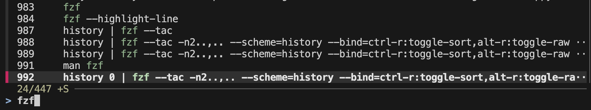

fzfと履歴の話
- Event:
Terminal Night #1
- Presented:
2025/11/28 nikkie
お前、誰よ（自己紹介）
macOS 14.5
Windsurf 1.12.36 (VS Code系)
zsh 5.9 (x86_64-apple-darwin23.0)
fzf 0.67.0 (Homebrew)
あなたの履歴は 幸せ ですか？
私は、幸せ 🎁（デモ）
Ctrl - R

※ 個人の感想 です
~/.zshrc [1]
source <(fzf --zsh)https://github.com/junegunn/fzf?tab=readme-ov-file#setting-up-shell-integration
Ctrl - R だけでなく 🎁
Ctrl - T
Alt - C
https://github.com/junegunn/fzf?tab=readme-ov-file#key-bindings-for-command-line
fzfはどんな実装をして、Ctrl - R で私を幸せにしてくれている？
https://github.com/junegunn/fzf/blob/v0.67.0/shell/key-bindings.zsh
シェルは知らないことが多い身ですが、実装を一部読んできました
bindkey
bindkey -M emacs '^R' fzf-history-widget
bindkey -M vicmd '^R' fzf-history-widget
bindkey -M viins '^R' fzf-history-widgethttps://github.com/junegunn/fzf/blob/v0.67.0/shell/key-bindings.zsh#L162-L164
bindkey
10月の 神楽坂第1ターミナル [2] で、もずますさんに教わった
bindkeyだ！https://zsh.sourceforge.io/Doc/Release/Zsh-Line-Editor.html#index-binding-keys
-Mで keymap 指定
fzf-history-widget の実装
FZF_DEFAULT_OPTS=$(__fzf_defaults "" "-n2..,.. --scheme=history --bind=ctrl-r:toggle-sort,alt-r:toggle-raw --wrap-sign '\t↳ ' --highlight-line ${FZF_CTRL_R_OPTS-} --query=${(qqq)LBUFFER} +m")https://github.com/junegunn/fzf/blob/v0.67.0/shell/key-bindings.zsh#L143
fzf --highlight-line 🎁
細かな違い fzf vs fzf --highlight-line
Highlight the whole current line
fzf +m
+m, --no-multi
Disable multi-select
fzf --nth
fzf -n2..,..FIELD INDEX EXPRESSION
fzf --nth
2..From the 2nd field to the last field..All the fields
historyの1列目を検索対象に含めないと思ったが、 全列含めている （-n .. だけでよい？）
fzf --query=${(qqq)LBUFFER} 🎁 [3]
コマンドを打っている途中の Ctrl - R もサポート
scoring scheme
default
path
history
suited for command history or any input where chronological ordering is important.
--bind (KEY/EVENT BINDINGS)
Each binding expression is KEY:ACTION or EVENT:ACTION.
--bind=ctrl-r:toggle-sort,alt-r:toggle-raw--bind (KEY/EVENT BINDINGS) 🎁
Ctrl - R: toggle-sort（scoringの昇順降順入れ替え）
Alt - R: toggle-raw（queryにマッチしない項目も表示）
toggle raw mode for displaying non-matching items
まとめ🌯 fzfと履歴の話
fzf --zsh などを使って、あなたの履歴はより幸せになれます！
Z Shell分からないなりに実装を読むの楽しい。
fzfのオプションいくつも知れた🙌
ご清聴ありがとうございました [4] (Happy development!)
nikkie（にっきー）・Python使い・ @ftnext sphinx-deck など
機械学習エンジニア。 Speeda AI Agent 開発（We're hiring!）